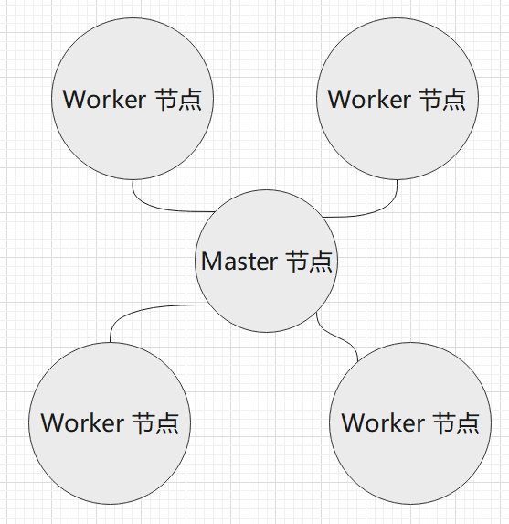

1.5 Kubernetes 入门基础
我们要学习 Kubernetes，就有首先了解 Kubernetes 的技术范围、基础理论知识库等，要学习 Kubernetes，肯定要有入门过程，在这个过程中，学习要从易到难，先从基础学习。
接下来笔者将为大家讲解 Kubernetes 各方面的知识，让读者了解 Kubernetes 是什么。
Kubernetes 是什么
在 2008 年，LXC（Linux containers） 发布第一个版本，这是最初的容器版本；2013 年，Docker 推出了第一个版本；而 Google 则在 2014 年推出了 LMCTFY。
为了解决大集群(Cluster)中容器部署、伸缩和管理的各种问题，出现了 Kubernetes、Docker Swarm 等软件，称为 容器编排引擎。
容器的产生解决了很多开发、部署痛点，但随着云原生、微服务的兴起，纯 Docker 出现了一些管理难题。我们先思考一下，运行一个 Docker 容器，只需要使用 docker run ... 命令即可，这是相当简单(relatibely simple)的方法。
但是，要实现以下场景，则是困难的：
- 跨多台主机的容器相互连接(connecting containers across multiple hosts)
- 拓展容器(scaling containers)
- 在不停机的情况下配置应用(deploying applications without downtime)
- 在多个方面进行服务发现(service discovery among several aspects)
Kubernetes 是 Google 基于十多年的生产环境运维经验，开发出的一个生产级别的容器编排系统。在 Kunernetes 文档中，这样描述 Kubernetes：
[Success]
"an open-source system for automating deployment, scaling, and management of containerized applications".
“一个自动化部署、可拓展和管理容器应用的开源系统”
Google 的基础设施在虚拟机(Virtual machines)技术普及之前就已经达到了很大的规模，高效地使用集群和管理分布式应用成为 Google 挑战的核心，而容器技术提供了一种高效打包集群的解决方案。
多年来，Google 一直使用 Borg 来管理集群中的容器，积累了大量的集群管理经验和运维软件开发能力，Google 参考 Borg ，开发出了 Kubernetes，即 Borg 是 Kubernetes 的前身。（但是 Google 目前还是主要使用 Borg）。
Kubernetes 从一开始就通过一组基元(primitives)、强大的和可拓展的 API 应对这些挑战，添加新对象和控制器地能力可以很容易地地址各种各样的产品需求(production needs)。
编排管理是通过一系列的监控循环控制或操作的；每个控制器都向询问对象状态，然后修改它，直至达到条件为止。容器编排是管理容器的最主要的技术。Dockers 也有其官方开发的 swarm 这个编排工具，但是在 2017 年的容器编排大战中，swarm 败于 Kubernetes。
Kubernetes 集群的组成
在 Kubernets 中，运行应用程序的环境处于虚拟化当中，因此我们一般不谈论硬件。
我们谈起 Kubernetes 和应用部署时，往往会涉及到容器、节点、Pods 等概念，它们共同工作来管理容器化(containerized)应用的部署和执行，但是各种各样的术语，令人眼花缭乱。为了更好地摸清 Kubernetes，下面我们将列举这些有边界的对象。
| 成分 | 名称 |
|---|---|
| Cluster | 集群 |
| Node | 节点 |
| Pod | 不翻译 |
| Container | 容器 |
| Containerzed Application | 容器化的应用 |
在 Kubernetes 中，不同的对象其管理的范围、作用范围不同，它们的边界大小也不同。接下来的内容，按将从小到大的粒度介绍这些组成成分。
Pod
在上一章中已经介绍过，Pod 是 Kubernetes 中管理和调度的最小工作单位，Pod 中可以包含多个容器。这些容器会共享 Pod 中的网络等资源。当部署 Pod 时，会把一组关联性较强的容器部署到同一个节点上。

而节点则是指一台服务器、虚拟机等，运行着一个完整的操作系统，提供了 CPU、内存等计算资源，一个节点可以部署多个 Pod。

而一个集群(Cluster)之中，运行着 N 台服务器，即 N 个节点。这些节点有两种，一种是 master 节点，一种是 worker 节点。master 节点运行着 Kubernetes 系统组件，而 worker 节点负责运行用户的程序。所有节点都归 master 管，我们通过命令、API 的方式管理 Kubernetes 集群时，是通过发送命令或请求到 master 节点上的系统组件，然后控制整个集群。

另外，kubernetes 中有命名空间(namespace)的概念，这跟在 1.2 章中学习到的 Linux-namespace 类似，在一个集群中使用命名空间将不同的 Pod 隔离开来。但是 Kubernetes 中，不同 namespace 的 Pod 是可以相互访问的，它们不是完全隔离的。
Kubernetes 结构
用图来表示体系结构，是阐述 Kubernetes 最快的方式，下面是一张称为 Kubernetes Architecture graphic 。

上图是简单的 kubernetes 结构，左侧虚线方框中，是 master 节点，运行着各种各样的组件，master 节点负责控制整个集群，当然在很大的集群中也可以有多个 master 节点；而右侧是三个工作节点，负责运行我们的容器应用。这种结构一般称为 master-slave 结构，因为某些原因，在 Kubernetes 中后来改称为 master-minions。工作节点挂了没关系，master 节点会将故障节点上的业务自动在另一个节点上部署。
工作节点比较简单，在工作节点中，我们看到有 kubelet 和 kube-proxy 两个组件，这两个组件在上一章中接触过了，kubelet 和 kube-proxy 都是跟 主节点的 kube-apiserver 进行通信的。kube-proxy 全称是 Kubenetes Service Proxy，负责组件之间的负载均衡网络流量。
在上图中， 主节点由多个组件构成，结构比较复杂， 主节点中记录了整个集群的工作数据，负责控制整个集群的运行。工作节点挂了没关系，但是 主节点挂了，整个集群就挂了。因此， 有条件的情况下，也应该 设置多个 主节点。
一个 主节点中包含以下访问：
- 一个 API 服务(kube-apiserver)
- 一个调度器(kube-scheduler)
- 各种各样的控制器(上图有两个控制器)
- 一个存储系统(这个组件称为etcd)，存储集群的状态、容器的设置、网络配置等数据。
这张图片中还有很多东西，这里暂时不作讲解，我们在后面的章节再去学习那些 Kubernetes 中的术语和关键字。
组件
一个 kubernetes 集群是由一组被称为节点的机器或虚拟机组成，节点有 master、worker 两种类型。一个集群中至少有一个 master 节点，在没有 worker 节点的情况下， Pod 也可以部署到 master 节点上。如果集群中的节点数量非常多，则可考虑扩展 master 节点，使用多个 master 节点控制集群。
在上一小节中，我们看到 主节点中包含了比较多的组件，工作节点也包含了一些组件，这些组件可以分为两种，分别是 Control Plane Components(控制平面组件)、Node Components(节点组件)。
Control Plane Components 用于对集群做出全局决策，部署在 master 节点上；
Node Components 在 worker 节点中运行，为 Pod 提供 Kubernetes 环境。
Master 节点
Master 是由一组称为控制平面组件组成的，如果你已经根据第二章中，通过 minikube 或 kubeadm 部署了 kubernetes，那么我们可以打开 /etc/kubernetes/manifests/ 目录，这里存放了 k8s 默认的控制平面组件的 YAML 文件。
.
├── etcd.yaml
├── kube-apiserver.yaml
├── kube-controller-manager.yaml
└── kube-scheduler.yaml
对于集群来说， 这四个组件都是是必不可少的。

在结构图中，还有一个 cloud-controller 组件，主要由云平台服务商提供，属于第三方组件，这里不再讨论。下面我们来了解 master 中的组件。
master 节点中各个组件(控制平面组件)需要使用到的端口：
| 协议 | 方向 | 端口范围 | 作用 | 使用者 |
|---|---|---|---|---|
| TCP | 入站 | 6443 | Kubernetes API 服务器 | 所有组件 |
| TCP | 入站 | 2379-2380 | etcd 服务器客户端 API | kube-apiserver, etcd |
| TCP | 入站 | 10250 | Kubelet API | kubelet 自身、控制平面组件 |
| TCP | 入站 | 10251 | kube-scheduler | kube-scheduler 自身 |
| TCP | 入站 | 10252 | kube-controller-manager | kube-controller-manager 自身 |
普通节点中各个组件需要使用到的端口：
| 协议 | 方向 | 端口范围 | 作用 | 使用者 |
|---|---|---|---|---|
| TCP | 入站 | 10250 | Kubelet API | kubelet 自身、控制平面组件 |
| TCP | 入站 | 30000-32767 | NodePort 服务† | 所有组件 |
kube-apiserver
kube-apiserver 是 k8s 主要进程之一，apiserver 组件公开了 Kubernetes API (HTTP API)，apiserver 是 Kubernetes 控制面的前端，我们可以用 Go、C# 等编程语言写代码，远程调用 Kubernetes，控制集群的运行。apiserver 暴露的 endiont 端口是 6443。
为了控制集群的运行，Kubernetes 官方提供了一个名为 kubectl 的二进制命令行工具，正是 apiserver 提供了接口服务，kubectl 解析用户输入的指令后，向 apiserver 发起 HTTP 请求，再将结果反馈给用户。
[Info] kubectl
kubectl 是 Kubernetes 自带的一个非常强大的控制集群的工具，通过命令行操作去管理整个集群。
Kubernetes 有很多可视化面板，例如 Dashboard，其背后也是调用 apiserver 的 API，相当于前端调后端。
总之，我们使用的各种管理集群的工具，其后端都是 apiserver，通过 apiserver，我们还可以定制各种各样的管理集群的工具，例如网格管理工具 istio。腾讯云、阿里云等云平台都提供了在线的 kubernetes 服务，还有控制台可视化操作，也是利用了 apiserver。
etcd
etcd 是兼具一致性和高可用性的键值数据库，作为保存 Kubernetes 所有集群数据的后台数据库。apiserver 的所有操作结果都会存储到 etcd 数据库中，etcd 主要存储 k8s 的状态、网络配置以及其它持久化数据，etcd 是使用 B+ 树实现的，etcd 是非常重要的组件，需要及时备份数据。
kube-scheduler
scheduler 负责监视新创建的 pod，并把 pod 分配到节点上。当要运行容器时，发送的请求会被调度器转发到 API；调度器还可以寻找一个合适的节点运行这个容器。
kube-controller-manager
kube-controller-manager 中包含了多个控制器，它们都被编译到一个二进制文件中，但是启动后会产生不同的进程。这些控制器有：
节点控制器（Node Controller）
负责在节点出现故障时进行通知和响应
任务控制器（Job controller）
监测代表一次性任务的 Job 对象，然后创建 Pods 来运行这些任务直至完成
端点控制器（Endpoints Controller）
填充端点(Endpoints)对象(即加入 Service 与 Pod)
服务帐户和令牌控制器（Service Account & Token Controllers）
为新的命名空间创建默认帐户和 API 访问令牌
控制器控制的 Pod、Job、Endpoints、Service 等，都是后面要深入学习的。